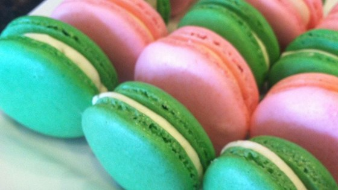
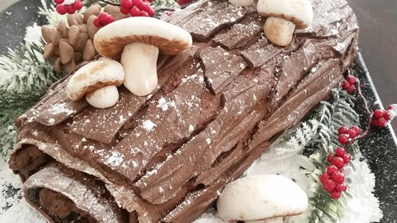

Pre-cooked
Here you can order some of our famous dishes to be delivered straight to your door from our restraunt fully cooked and ready to eat.
Here we have one of our signature Italian dishes, Pizza Margherita. Our Pizza Margherita is made fresh daily using our signature maranara sause and delectable cheese, topped with fresh cherry tomatos.

Our next dish is one of our more popular ones, Spaghetti alla Carbonara. Using olive oil directly from Italy and bacon cooked to prefection we carefuly assemble this dish with a team of our talented chefs. Dashed with salt and pepper and lightly coated with your choice of parmesian or pecorino cheese, this whole pound of of pasta will satisfy both your tastebuds and your stomach.

The third dish on our menue is our Fettuccine Pesto. Using only the freshest basil, pine nuts, and garlic, we hand chop and mix the ingredients with butter and heavy cream to make our Pesto sauce. The sauce is then drizzled over twelve ounces of fresh, steaming pasta, then top it with grated parmesan and chopped tomatos.
The next dish is our Filet Mignon. Cooked to your choice of well done to rare, our chefs pay close attention to be sure it's cooked to perfection. We season the steaks with salt and pepper before cooking them in balsamic vinegar and red wine to ggive it a mouth-watering sweet and tangy flavor that all of our customers enjoy.
Desserts
What's dinner without dessert? Here we have some of our popular desserts for delivery.
End your meal with our fresh and warm macarons. Our macarons are made using egg whites, white sugar, confectioner's sugar, and almonds. Creating a sweet and nutty flavor that our customers enjoy.
Don't let looks fool you, this is not a log, it's actualy cake! Our recipy for Buche de Noel comes straight from it's home in France. This festive masterpeice is usuaily eaten in france on Christmas and resembles a Yule log. This chocolate cake is chilled then baked and chilled again before finaly being ready to eat.